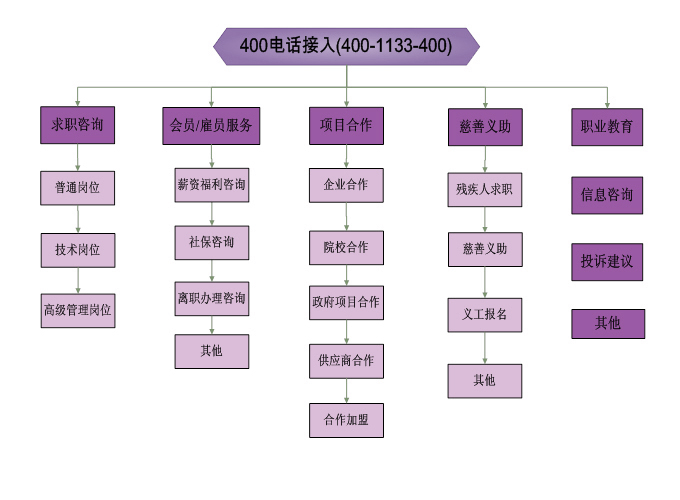
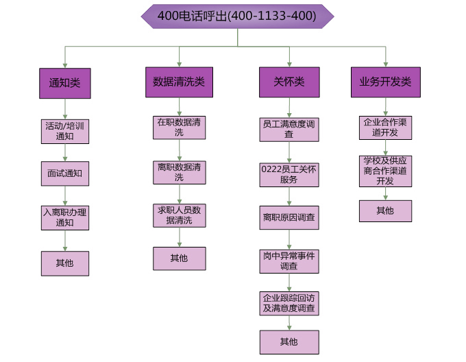

总部地址：
中国苏州平江新城平泷路1258号天元辰广场4-5F总机：
0512-68780000传真：
0512-68780000-2000官网：
http://www.engma.net新浪微博：
@易优泽腾讯微信：
易优泽、HR商学院全国400投诉服务热线：
400-1133-400各地分公司：
苏州总部 / 上海 / 昆山 / 太仓 / 常熟 / 吴江 / 张家港 / 无锡 / 宜兴 / 江阴 / 常州 / 扬州 / 盐城 / 徐州 / 嘉兴 / 芜湖 / 合肥 / 重庆 / 成都 / 贵阳 / 武汉 / 宜昌 / 孝感 / 十堰 / 鄂州 / 荆州 / 襄阳 / 黄冈 / 黄石地图：
全国400投诉服务热线：400-1133-400
400电话客户服务中心（400-1133-400）成立于2002年，是国内首批提供400电话客户服务热线的人力资源服务机构。中心立足于长三角福地——苏州，服务于国内20余家分支机构，致力于打造人力资源行业最专业的400电话客户服务中心。中心自成立以来，充分依托电话客户服务管理系统和计算机信息技术平台，直接面向求职者、雇员、合作企业、供应商等终端用户，提供一站式、智能化、个性化的综合信息咨询服务。
中心秉承“客户至上”的服务理念，自成立之初就建立健全了完善的客户服务管理体系。通过11年5*8小时不间断的人工呼入、呼出服务及7*24小时的电子语音系统服务，为广大求职者提供高效便捷的求职服务平台，为雇员提供一站式、全方位的在职咨询、投诉服务，为合作企业及供应商搭建及时高效的沟通反馈平台。
400电话客户服务中心以客户需求为导向，共提供呼入、呼出2大类，34细项客户服务项目。 